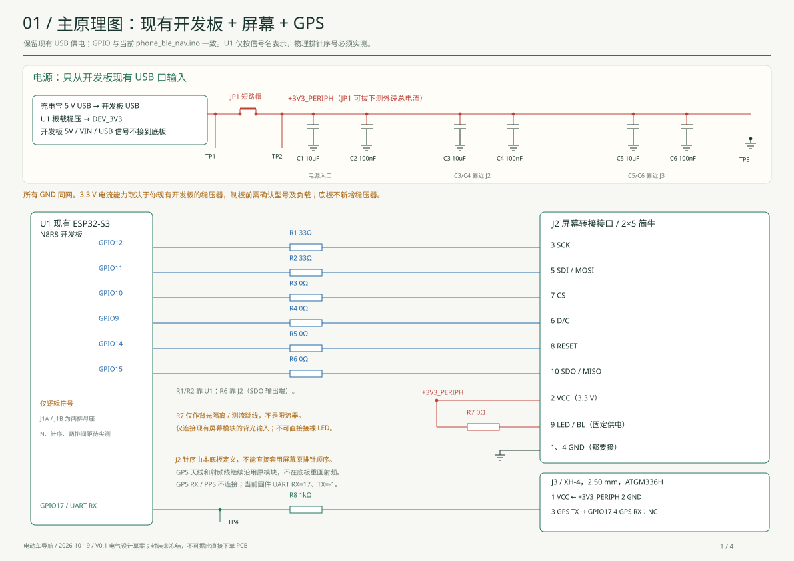
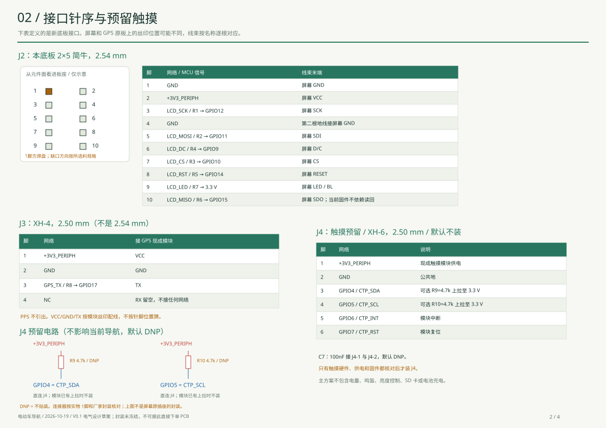
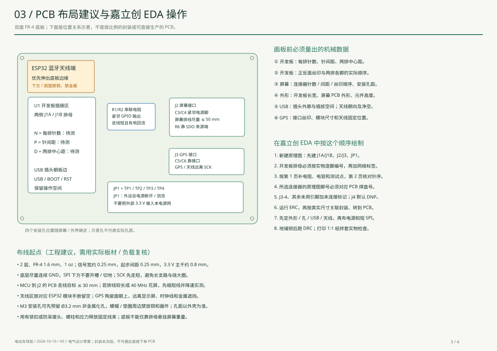
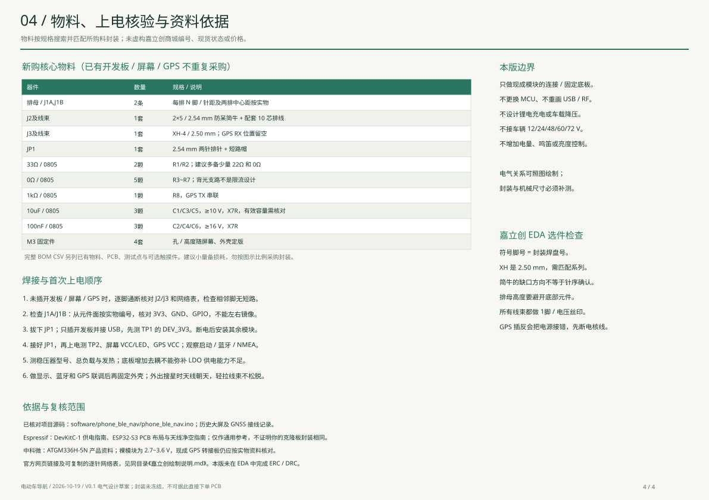

<!doctype html><meta charset="utf-8"><title>导航转接底板 V0.1</title><style>body{margin:0;background:#dfe5dc;font-family:system-ui}header{padding:24px;background:#183b32;color:white}section{max-width:1400px;margin:18px auto;background:white}img{width:100%;display:block}a{color:#176648}nav{padding:16px;background:white}@media print{header,nav{display:none}section{break-after:page;margin:0}}</style><header><h1>导航转接底板 V0.1</h1><p>电气连接草案 / 复用现有模块 / 开发板排母与机械尺寸待实测</p></header><nav><a href="../pdf/导航转接底板V0.1_原理图与绘制指南.pdf">PDF图纸</a> · <a href="物料清单_BOM.csv">物料清单</a> · <a href="接口逐针网络表.csv">逐针网络表</a> · <a href="嘉立创绘制说明.md">完整说明</a></nav><section></section><section></section><section></section><section></section>